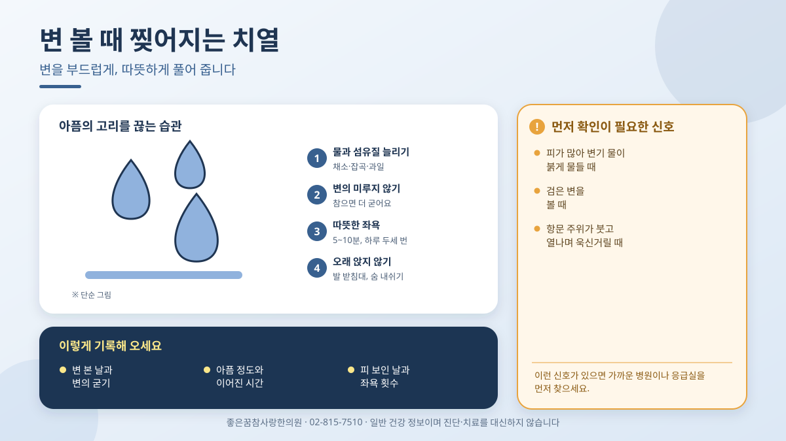

이종호 한의사 감수좋은꿈참사랑한의원 대표원장 (한의사 면허번호 19769)발행 2026-11-26 · 수정 2026-11-26
이 글의 차례
화장실에 가는 일이 두려워졌습니다. 변을 보는 순간 항문이 찢어지는 것처럼 아프고, 휴지에는 선홍색 피가 묻어납니다. 그 뒤로도 한참 동안 화끈거리고 욱신거려 의자에 앉기도 조심스럽습니다. 그래서 변의가 와도 자꾸 미루게 됩니다.
진료실에서 이런 이야기를 꺼내기까지 오래 망설이셨다는 분이 많습니다. 부끄럽기도 하고 '치질이겠지' 하고 넘기다가, 아픔이 몇 주째 반복되자 결국 말씀을 꺼내십니다. 그 마음을 충분히 이해합니다.
변을 볼 때의 날카로운 통증과 선홍색 피는 항문 안쪽 피부가 길게 찢어진 치열에서 흔히 보이는 모습입니다. 치질과 헷갈리기 쉽지만 생긴 모양과 아픔의 성격이 조금 다릅니다.
이 글에서는 치열이 무엇인지, 왜 같은 자리에서 아픔이 되풀이되는지, 변을 부드럽게 하는 생활과 좌욕, 그리고 항문외과와 한의원에서 각각 살필 수 있는 부분을 차분히 정리해 보겠습니다.
치열은 어떤 상태인가요
치열은 항문 바로 안쪽의 얇은 피부가 세로로 길게 찢어진 상태입니다. 딱딱하고 굵은 변이 억지로 빠져나가면서 피부가 늘어나다 찢어지는 경우가 가장 흔하고, 반대로 심한 설사가 잦아도 생길 수 있습니다.
찢어진 지 얼마 되지 않은 치열은 얕은 상처라서, 변을 부드럽게 하고 상처가 덜 자극받도록 생활을 조절하면 몇 주 사이에 아무는 경우가 많습니다. 이를 급성 치열이라고 부릅니다.
몇 주가 지나도 아물지 않고 같은 자리가 계속 찢어지는 경우를 만성 치열이라고 부릅니다. 상처가 깊어지고 바깥쪽에 작은 피부 꼬리가 생기기도 하며, 이때는 항문외과에서 연고나 약, 때로는 시술이나 수술을 상의하게 됩니다.
치질과 치열은 어떻게 다를까요
항문에서 피가 나면 대개 치질을 먼저 떠올리시지만, 치질과 치열은 다른 상태입니다. 몇 가지 차이를 알아 두시면 진료실에서 설명하시기도 쉽습니다.
- 아픔: 치열은 변을 볼 때 찢어지듯 날카롭게 아프고 그 뒤로 수십 분에서 몇 시간 쓰라립니다. 속치질은 피는 나도 아픔은 크지 않은 경우가 많습니다
- 피: 두 가지 모두 선홍색 피가 휴지에 묻거나 변기에 떨어질 수 있습니다
- 만져지는 것: 치질은 항문 밖으로 말랑한 덩어리가 빠져나오기도 하고, 치열은 오래되면 작은 피부 꼬리가 만져지기도 합니다
- 계기: 치열은 딱딱한 변을 본 날부터 갑자기 시작된 경우가 많습니다
치질과 치열이 함께 있는 분도 계셔서 스스로 구분하기는 어렵습니다. 처음 피가 보였거나 아픔이 몇 주째 이어진다면 항문외과에서 한 번 확인을 받아 보시는 것이 순서입니다.
왜 같은 자리가 자꾸 찢어질까요
치열이 잘 아물지 않는 데에는 고리처럼 이어지는 이유가 있습니다. 상처가 아프면 항문을 둘러싼 조임근이 반사적으로 꽉 조여듭니다. 조임근이 조여 있으면 그 자리로 가는 피의 흐름이 줄어 상처가 더디게 아뭅니다.
또 아픔이 두려워 변의를 참게 되면 변은 장 속에 오래 머물며 물기를 빼앗겨 더 딱딱해집니다. 그 딱딱한 변이 조여 있는 항문을 지나가며 같은 자리를 다시 찢고, 아픔은 다시 조임을 부릅니다.
그래서 치열을 돌볼 때는 이 고리를 끊는 것이 핵심입니다. 변을 부드럽게 해서 상처가 덜 늘어나게 하고, 따뜻한 좌욕으로 조임근의 긴장을 풀어 피의 흐름을 돕는 것이 생활에서 할 수 있는 두 가지 큰 축입니다.
변을 부드럽게 만드는 것이 먼저입니다
치열이 있을 때 가장 먼저 챙길 것은 변의 굳기입니다. 변이 부드럽고 적당한 굵기로 나오면 상처가 덜 늘어나고, 아물 시간을 벌 수 있습니다.
물을 하루 동안 조금씩 자주 드시고, 채소와 잡곡, 해조류, 과일로 섬유질을 늘려 보세요. 섬유질을 늘릴 때는 물도 함께 늘려야 변이 부드러워집니다. 물 없이 섬유질만 늘리면 오히려 변이 굵고 딱딱해질 수 있습니다.
항문외과에서 변을 부드럽게 하는 약을 처방받으셨다면 안내받은 대로 꾸준히 드시는 것이 좋습니다. 아픔이 줄었다고 바로 끊으면 다시 변이 굳어 같은 자리가 찢어지는 일이 생길 수 있습니다.
좌욕은 어떻게 하면 좋을까요
좌욕은 따뜻한 물에 엉덩이를 담가 항문 주변의 긴장을 풀어 주는 방법입니다. 따뜻한 온기가 조임근을 느슨하게 하고 피의 흐름을 도와, 쓰라림이 줄었다는 분이 많습니다.
- 손을 넣어 따뜻하다고 느낄 정도의 물(너무 뜨겁지 않게)을 대야나 좌욕기에 받기
- 한 번에 5~10분, 변을 본 뒤와 잠들기 전 등 하루 두세 번
- 비누나 소독약을 넣기보다 깨끗한 물만으로 충분
- 끝나면 부드러운 수건으로 두드리듯 물기를 말리기
좌욕을 너무 오래 하거나 뜨거운 물로 하면 피부가 오히려 약해질 수 있습니다. 짧고 따뜻하게, 자주 하는 것이 요령입니다. 샤워기로 따뜻한 물을 항문 쪽에 잠시 흘려 주는 것도 비슷한 도움이 될 수 있습니다.
화장실 습관도 함께 바꿉니다
변의가 오면 미루지 않고 바로 화장실에 가는 것이 중요합니다. 아프다고 참으면 변이 더 굳어 다음 배변이 더 아파집니다. 아침 식사 뒤처럼 장이 크게 움직이는 시간에 화장실에 앉을 여유를 만들어 두세요.
변기에 앉을 때 발밑에 낮은 받침대를 두어 무릎을 조금 올리면 힘을 덜 주고도 변이 잘 나옵니다. 숨을 참고 세게 밀어내기보다 숨을 천천히 내쉬며 부드럽게 힘주는 편이 상처에 부담이 적습니다.
휴대전화를 보며 변기에 오래 앉아 있는 습관은 항문 주변에 피가 몰리게 해서 치열과 치질 모두에 좋지 않습니다. 5분쯤 앉아도 소식이 없으면 일어났다가 다음 신호를 기다리세요. 뒤처리는 마른 휴지로 세게 닦기보다 물로 씻고 두드려 말리는 쪽을 권합니다.
아이와 산후에 생기는 치열
치열은 어른만의 일이 아닙니다. 변비가 있는 아이가 딱딱한 변을 보다 항문이 찢어지면, 아픔이 무서워 변을 참게 되고 변비가 더 심해지는 고리가 아이에게도 똑같이 생깁니다. 아이가 화장실을 무서워하거나 변을 볼 때 울고, 휴지에 피가 묻는다면 소아청소년과에서 확인을 받아 보세요.
출산 뒤에도 치열이 잘 생깁니다. 임신 막바지부터 변이 굳기 쉽고, 출산 때 힘을 주며 항문 주변에 부담이 많이 가기 때문입니다. 산후에는 물과 섬유질을 챙기고 좌욕을 하시되, 약을 쓰실 때는 수유 중이라는 것을 먼저 알리고 산부인과나 항문외과와 상의하시면 됩니다.
마음이 조이면 항문도 조입니다
치열로 고생하시는 분들께 여쭤 보면, 바쁘고 긴장이 큰 시기에 아픔이 도졌다는 이야기를 자주 듣습니다. 마음이 쫓기면 물을 덜 마시고, 끼니를 거르고, 화장실을 미루게 됩니다. 몸 전체가 움츠러들면서 항문 주변의 근육도 함께 조여듭니다.
그래서 진료실에서는 항문 이야기와 함께 잠과 일의 무게, 요즘의 걱정거리를 같이 여쭙니다. 좌욕하는 시간을 하루의 작은 쉼표로 삼아, 따뜻한 물에 몸을 맡기고 숨을 길게 내쉬어 보세요. 몸의 긴장이 풀리는 만큼 항문 주변도 함께 느슨해지는 경우가 많습니다.
식탁에서 살펴볼 것
치열이 있을 때는 맵고 짠 음식, 술을 줄이시는 것이 좋습니다. 매운 음식은 변으로 나올 때 상처를 따갑게 자극하고, 술은 몸의 물기를 빼앗아 변을 굳게 만들기 쉽습니다.
밥을 흰쌀만 드시기보다 잡곡을 조금 섞고, 끼니마다 나물이나 채소 반찬을 한두 가지 곁들여 보세요. 아침에 사과나 키위, 자두처럼 물기와 섬유질이 함께 있는 과일을 드시는 것도 변을 부드럽게 하는 데 도움이 될 수 있습니다.
먼저 이렇게 여쭙니다
항문 이야기는 꺼내기 어려우시지만, 저는 대략 이런 순서로 편하게 여쭙니다.
- 아픔은 언제부터, 변을 볼 때와 그 뒤 얼마나 이어지나요?
- 피는 어떤 색이고, 휴지에 묻는 정도인가요, 변기에 떨어지나요?
- 요즘 변은 며칠에 한 번, 어떤 굳기로 보시나요?
- 항문 밖으로 덩어리가 만져지거나 빠져나온 적이 있나요?
- 항문외과에서 진료를 받으셨나요? 쓰고 계신 연고나 약이 있나요?
- 하루에 물은 얼마나 드시고, 앉아 지내는 시간은 얼마나 되나요?
모두 정확히 기억하지 못하셔도 괜찮습니다. 말씀하기 편한 것부터 천천히 들려주시면 됩니다.
일상에서 먼저 해 볼 수 있는 것
- 물을 하루 동안 조금씩 자주 마시고 채소, 잡곡, 과일로 섬유질 늘리기
- 변의가 오면 미루지 않고 바로 화장실 가기
- 변을 본 뒤와 잠들기 전 따뜻한 물로 5~10분 좌욕하기
- 변기에 오래 앉아 있지 않기, 발 받침대 두고 숨을 내쉬며 힘주기
- 뒤처리는 물로 씻고 부드럽게 두드려 말리기
- 맵고 자극적인 음식, 술은 아픈 시기에 줄이기
오래 앉아 일하신다면 한 시간에 한 번 일어나 몇 분 걷고, 딱딱한 의자에는 부드러운 방석을 깔아 주세요. 가운데가 뚫린 도넛 방석보다 넓고 푹신한 방석이 항문 주변에 덜 부담스럽다는 분이 많습니다.
한의원에서 함께 살필 수 있는 경우
- 항문외과 진료를 받고 있는데 변비가 이어져 같은 자리가 자꾸 찢어지는 경우
- 배와 손발이 차고 물을 마셔도 변이 잘 굳는 경우
- 긴장하거나 바쁜 시기마다 변비가 생겨 치열이 되풀이되는 경우
- 아픔이 두려워 화장실 가는 일 자체가 스트레스가 된 경우
좋은꿈참사랑한의원에 오시면 먼저 아래 '먼저 확인이 필요한' 신호가 없는지부터 봅니다. 그다음 맥을 짚고 식사와 물, 대변, 잠, 긴장을 여쭈며, 배를 눌러 보며 장의 흐름을 확인합니다.
진찰한 내용을 바탕으로 생활에서 바꿔 볼 것 하나와 함께 침, 온열 관리, 한약 상담 가운데 지금 상태에 맞는 것을 정합니다. 한의원에서는 주로 변비와 장의 흐름, 몸의 긴장을 함께 살피고, 상처 자체의 치료는 항문외과와 나란히 갑니다. 한약을 상의할 때는 드시는 약을 모두 확인하고 신중하게 정하며, 처방받은 약은 상의 없이 멈추지 않습니다.
임신 중이시거나 수유 중이시라면 처음에 먼저 알려 주세요. 침과 한약 모두 그에 맞춰 조심스럽게 정하고, 필요하면 산부인과 선생님과 상의하시도록 안내합니다.
이렇게 기록해 오시면 상담이 쉬워집니다
치열은 변의 굳기와 아픔이 함께 움직여서, 짧게라도 적어 두시면 흐름이 잘 보입니다. 2주 정도 적어 보세요.
- 변을 본 날과 시각, 변의 굳기(딱딱함, 보통, 묽음)
- 아픔의 정도(10점 만점)와 이어진 시간
- 피가 보인 날과 대략의 양
- 하루 물 마신 양과 좌욕한 횟수
- 쓰신 연고나 약, 변을 부드럽게 하는 약을 드신 날
빠진 날이 있어도 괜찮습니다. 적어 오신 줄 가운데 유독 아팠던 날부터 함께 들여다보겠습니다. 기록을 보면 아픈 날 앞에는 대개 물이 적었거나 변을 참았던 날이 있었다는 것이 눈에 들어옵니다.
화장실이 다시 편한 곳이 되도록
치열은 작은 상처지만 하루를 통째로 흔드는 아픔입니다. 변을 부드럽게 하고, 따뜻하게 풀어 주고, 참지 않는 습관을 함께 이어 가면 화장실이 다시 덜 두려운 곳이 되는 경우가 많습니다.
아픔이 줄었다고 습관을 바로 놓으면 같은 자리가 다시 찢어지는 일이 생기기 쉽습니다. 상처가 아문 뒤에도 몇 달은 물과 섬유질, 화장실 습관을 이어 가 주세요. 그 시간이 다시 찢어지지 않도록 지켜 주는 울타리가 됩니다.
항문 이야기는 누구에게나 쑥스럽습니다. 그래도 아픔을 혼자 오래 견디기보다 일찍 말씀해 주시는 편이 훨씬 수월하게 풀립니다. 진료실에서는 편하게, 말씀하기 쉬운 것부터 천천히 들려주시면 됩니다.
이번 주에는 물 한 컵 더 마시기, 변 본 뒤 좌욕하기, 변의 미루지 않기 가운데 하나만 골라 보세요. 다음에 오시면 그 일주일 동안 화장실이 어땠는지부터 여쭙겠습니다.
이런 증상은 먼저 확인이 필요합니다
- 피가 많이 나와 변기 물이 붉게 물들거나, 검은 변을 보는 경우
- 항문 주위가 붓고 단단해지며 열이 나고, 앉기 힘들 만큼 욱신거리는 경우
이런 신호가 있으면 한의원보다 가까운 병원이나 응급실을 먼저 찾으세요.
함께 읽으면 좋은 글
- 치질 때문에 항문이 붓고 피가 묻어날 때 무엇을 구분하고 어떻게 살피나요?
- 아이가 며칠씩 변을 못 보거나 화장실 가기를 무서워하는 소아 변비는 어떻게 살피나요?
- 임신 중 변비가 심해졌을 때는 무엇을 먼저 살피고, 일상에서는 어떻게 하나요?
- 변을 보고 나도 개운하지 않은 잔변감, 하루에 여러 번 화장실에 갈 때는 어떻게 살피나요?
- 배가 자주 아프고 설사·변비가 반복되는 과민성 장 증후군은 어떻게 살피나요?

여쭙는 것
- 아픔은 언제부터, 변을 볼 때와 그 뒤 얼마나 이어지나요?
- 피는 어떤 색이고, 휴지에 묻는 정도인가요, 변기에 떨어지나요?
- 요즘 변은 며칠에 한 번, 어떤 굳기로 보시나요?
생활에서 해 볼 것
- 물을 하루 동안 조금씩 자주 마시고 채소, 잡곡, 과일로 섬유질 늘리기
- 변의가 오면 미루지 않고 바로 화장실 가기
- 변을 본 뒤와 잠들기 전 따뜻한 물로 5~10분 좌욕하기
한의원에서 함께 살필 것
- 항문외과 진료를 받고 있는데 변비가 이어져 같은 자리가 자꾸 찢어지는 경우
- 배와 손발이 차고 물을 마셔도 변이 잘 굳는 경우
- 긴장하거나 바쁜 시기마다 변비가 생겨 치열이 되풀이되는 경우
먼저 확인이 필요한 신호
- 피가 많이 나와 변기 물이 붉게 물들거나, 검은 변을 보는 경우
- 항문 주위가 붓고 단단해지며 열이 나고, 앉기 힘들 만큼 욱신거리는 경우
한눈에 보는 표
| 구분 | 핵심 |
|---|---|
| 여쭙는 것 | 아픔은 언제부터, 변을 볼 때와 그 뒤 얼마나 이어지나요? 피는 어떤 색이고, 휴지에 묻는 정도인가요, 변기에 떨어지나요? |
| 생활에서 해 볼 것 | 물을 하루 동안 조금씩 자주 마시고 채소, 잡곡, 과일로 섬유질 늘리기 변의가 오면 미루지 않고 바로 화장실 가기 |
| 한의원에서 함께 살필 것 | 항문외과 진료를 받고 있는데 변비가 이어져 같은 자리가 자꾸 찢어지는 경우 배와 손발이 차고 물을 마셔도 변이 잘 굳는 경우 |
| 먼저 확인이 필요한 신호 | 피가 많이 나와 변기 물이 붉게 물들거나, 검은 변을 보는 경우 항문 주위가 붓고 단단해지며 열이 나고, 앉기 힘들 만큼 욱신거리는 경우 |
자주 묻는 질문
치열은 저절로 아물기도 하나요?
찢어진 지 얼마 되지 않은 치열은 변을 부드럽게 하고 좌욕을 하며 생활을 조절하면 몇 주 사이에 아무는 경우가 많습니다. 몇 주가 지나도 아픔이 반복된다면 항문외과에서 확인을 받아 보세요.
피가 나는데 치질인지 치열인지 어떻게 알 수 있나요?
변을 볼 때 찢어지듯 아프면 치열을, 아픔 없이 피만 나거나 덩어리가 빠져나오면 치질을 먼저 생각하지만 스스로 구분하기는 어렵습니다. 처음 피가 보였다면 항문외과에서 확인하시는 것이 순서입니다.
좌욕은 얼마나 자주 하면 되나요?
변을 본 뒤와 잠들기 전 등 하루 두세 번, 한 번에 5~10분 정도를 권합니다. 너무 뜨겁거나 오래 하면 피부가 약해질 수 있어 짧고 따뜻하게 하시면 됩니다.
한의원에서 치열을 치료할 수 있나요?
상처 자체의 진찰과 치료는 항문외과와 함께 가시길 권합니다. 한의원에서는 치열을 되풀이하게 만드는 변비와 장의 흐름, 몸의 긴장을 함께 살핍니다.
좋은꿈참사랑한의원은 재진 때 지난번 이야기부터 이어서 여쭙니다. 진료시간과 예약은 오시는 길에서 확인하세요.
어디서 상담받을 수 있나요?
좋은꿈참사랑한의원은 서울 동작구 만양로2길 2 신성빌딩 3층·5층(서울 동작구 상도동, 7호선 상도역 3번 출구 근처)에 있습니다. 한의사 3명(이종호 대표원장, 조영기 수석진료원장, 정원영 진료원장)이 진료합니다. 진료시간은 평일 09:30~20:00(점심 13:00~14:00), 토·일·공휴일 09:30~15:00이며, 방문 전 전화로 확인을 권합니다. 예약은 네이버 예약, 카카오톡 상담, 전화 02-815-7510로 받습니다.
이 글은 일반적인 건강 정보이며 개인의 진단이나 치료를 대신하지 않습니다. 증상이 있거나 복용 중인 약이 있다면 진료를 통해 확인하세요. 치료 효과는 개인마다 다를 수 있습니다.
작성 기준: 일반적으로 알려져 있는 건강 정보를 참고해 정리했습니다(대표원장 감수). 증상 기록은 1~2주 동안 하루 1회, 비슷한 시간에 적어 오시면 지난 상태와 비교하기 쉽습니다.